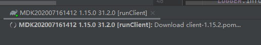

有开发过 1.13+ 的 forge 模组的同学都知道，fg 修改了启动方式，导致 idea 启动开发环境需要经过 gradle build，gradle prepareRunClient 的联网工作才能启动。
现在，你只需要进行以下操作就可以在 3s 内启动你的 mc 开发环境。
- 进入
setting->Build,Excution,Deployment->Gradle 把 Build and run using 修改成 Intellij Idea 。
- 选择你要加速的 task，以
runClient 为例，删除最底下的 Before launch 中的 Gradle prepareRunClient。
- 修改
Environment variable 中的 MOD_CLASSES 。从 cuisine%%/home/jihuayu/dev/Cuisine2/build/resources/main:cuisine%%/home/jihuayu/dev/Cuisine2/build/classes/java/main 修改为 cuisine%%/home/jihuayu/dev/Cuisine2/src/main/resources:cuisine%%/home/jihuayu/dev/Cuisine2/out/production/classes。注意这两个的差别。
这样子就能加速你的 mcdev 环境的启动，和 debug下热重载的速度。
原理：把使用 gradle 编译修改成用 idea 编译，杜绝了联网行为。
现在，你只需要进行以下操作就可以在 3s 内启动你的 mc 开发环境。
- 进入
setting->Build,Excution,Deployment->Gradle 把 Build and run using 修改成 Intellij Idea 。
- 选择你要加速的运行任务，以
runClient 为例，编辑这个任务的配置，删除最底下的 Before launch 中的 Gradle prepareRunClient 。
- 修改 2 中打开的页面中的
Environment variable 中的 MOD_CLASSES 。从 cuisine%%/home/jihuayu/dev/Cuisine2/build/resources/main:cuisine%%/home/jihuayu/dev/Cuisine2/build/classes/java/main 修改为 cuisine%%/home/jihuayu/dev/Cuisine2/src/main/resources:cuisine%%/home/jihuayu/dev/Cuisine2/out/production/classes 。注意这两个的差别。
这样子就能加速你的 mcdev 环境的启动，和 debug下热重载的速度。
原理：把使用 gradle 编译修改成用 idea 编译，杜绝了联网行为。
你好 第2、3部没看懂，不清楚具体应该在哪里操作。能详细说明一下吗？
你好，打扰下，我照您的方式操作了下，但是仍然有问题，启动时仍然会联网下载一些xxxxx.pom，不知道为什么。但手动拔掉网线却能直接启动。
出现问题的步骤(四张截图) ...◀ 单击展开
[修改工具]
[修改环境变量]
[删除了PrepareRunClient]
[出现问题]

问题已解决，由换源布置开发环境改为了下载离线包，重新进行这个步骤操作成功了。
{kind=link}
{kind=link}
{kind=link}
{kind=link}
{kind=link}